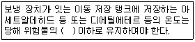
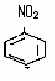
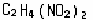
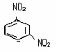
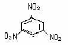
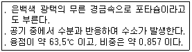

위험물기능사 (2006-07-16 기출문제)
1과목: 화재 예방과 소화방법
1. 물이 소화제로 쓰이는 이유 중 거리가 먼 것은?
- 구입이 용이하다.
- 제거소화가 잘 된다.
- 취급이 간편하다.
- 기화잠열이 크다.
(정답률: 74%)

2. 다음 위험물 중 물과 반응하여 산소를 내는 것은?
- 과산화칼륨
- 과염소산칼륨
- 염소산칼륨
- 아염소산칼륨
(정답률: 78%)
3. 위험물안전관리법상 전기설비에 대해 소화설비의 적응성이 없는 것은?
- 물분무소화설비
- 이산화탄소소화설비
- 포소화설비
- 할로겐화합물소화설비
(정답률: 52%)
4. 다음 중 연소에 필요한 산소의 공급원을 단절하는 것은?
- 제거작용
- 질식작용
- 희석작용
- 억제작용
(정답률: 85%)
5. 옥내주유취급소의 소화난이도 등급은?
- Ⅰ
- Ⅱ
- Ⅲ
- Ⅳ
(정답률: 67%)
6. 불에 대한 제거 소화방법의 적용이 잘못된 것은?
- 유전의 화재 시 다량의 물을 이용하였다.
- 가스화재 시 밸브 및 콕크를 잠궜다.
- 산불화재 시 벌목을 하였다.
- 촛불을 바람으로 불어 가연성 증기를 날려 보냈다.
(정답률: 74%)
7. 다음 중 제2류 위험물의 일반적인 취급 및 소화방법에 대한 설명으로 옳은 것은?
- 비교적 낮은 온도에서 착화되기 쉬우므로 고온체와 접촉시킨다.
- 인화성 액체(4류)와의 혼합을 피하고, 산화성 물질(1류, 6류)과 혼합하여 저장한다.
- 금속분, 철분, 마그네슘, 황화린은 물에 의한 냉각소화가 적당하다.
- 저장용기를 밀봉하고 위험물의누출을 방지하여 통풍이 잘되는 냉암소에 저장한다.
(정답률: 77%)
8. 대형 수동식소화기의 설치기준은 방호대상물의 각 부분으로 부터 하나의 대형 수동식소화기까지의 보행거리가 몇 m 이하가 되도록 설치하여야 하는가?
- 30
- 20
- 10
- 5
(정답률: 64%)
9. 압력수조를 이용한 옥내소화전설비의 가압송수장치에서 압력수조의 최소압력(MPa)은? (단, 소방용 호스의 마찰손실 수두압 : 3MPa, 배관의 마찰손실 수두압 : 1MPa, 낙차의 환산 수두압 : 1.35MPa )
- 5.35
- 5.70
- 6.00
- 6.35
(정답률: 61%)
10. 옥외 저장시설에서 지정수량 200배 초과의 위험물을 저장할 경우 보유 공지의 너비는 몇 m 이상으로 하는가? (단, 제4류 위험물과 제 6류 위험물은 제외한다.)
- 0.5m
- 2.5m
- 10m
- 15m
(정답률: 54%)
11. 폐쇄형 스프링클러의 경우 스프링클러헤드의 반사판과 당해 헤드의 부착면과의 거리는 몇 m 이하인가?
- 0.2
- 0.3
- 0.4
- 0.5
(정답률: 54%)
12. 다음 위험물 중 화재가 발생하였을 때 소화에 물을 사용할 수 없는 것은?
- 황(S)
- 황린 (P4)
- 적린(P)
- 알루미늄 분말(Al)
(정답률: 80%)
13. 다음 중 위험물 제조소의 안전거리를 20m 이상으로 하여야 하는 것은?
- 학교
- 유형문화재
- 고압가스 시설
- 병원
(정답률: 67%)
14. 점화원을 가까이 댔을 때 연소형태가 시작되는 최저온도는?
- 연소점
- 발화점
- 인화점
- 분해점
(정답률: 50%)
15. 착화온도 600℃ 의 의미는? (단, 공기 중 임을 가정한다.)
- 600℃로 가열하면 점화원이 있으면 연소한다.
- 600℃로 가열하면 비로소 인화된다.
- 600℃ 이하에서는 점화원이 있어도 인화하지 않는다.
- 600℃로 가열하면 가열된 열만 가지고 스스로 연소가 시작된다.
(정답률: 52%)
16. 탄화칼슘 60,000㎏ 을 소요단위로 산정하면 몇 단위인가?
- 10단위
- 20단위
- 30 단위
- 40단위
(정답률: 66%)
17. 연소가 일어나려면 가연물, 산소공급원, 점화원이 필요하다. 다음 중 점화원으로 적합하지 않은 것은?
- 마찰에 의한 점화
- 충격에 의한 점화
- 가열에 의한 점화
- 흡수에 의한 점화
(정답률: 83%)
18. 다음 중 Halon 번호가 잘못 짝지어진 것은?
- CH3Br - Halon 101
- CH3I Halon 10001
- CCl4- Halon 104
- CF3Br Halon 1301
(정답률: 42%)
19. 자연발화의 조건으로 거리가 먼 것은?
- 표면적이 넓을 것
- 열전도율이 클 것
- 발열량이 클 것
- 주위의 온도가 높을 것
(정답률: 83%)
20. 분말소화약제의 주성분이 아닌 것은?
- 탄산수소나트륨
- 인산암모늄
- 탄산나트륨
- 탄산수소칼륨
(정답률: 61%)
2과목: 위험물의 화학적 성질 및 취급
21. 과염소산 염류의 공통된 성질은?(오류 신고가 접수된 문제입니다. 반드시 정답과 해설을 확인하시기 바랍니다.)
- 특정 물질과 혼합 시 마찰 혹은 충격에 안전하지 못하다.
- 산화되기 쉽다.
- 물을 가하면 격렬히 화학적으로 반응된다.
- 흑색의 침상결정이다.
(정답률: 35%)
22. 제5류 위험물을 저장할 때 주의하여야 할 사항 중 틀린 것은?
- 통기가 잘 되는 곳에 저장한다.
- 불꽃과의 접촉을 피한다.
- 건조를 위해 온도가 높은 곳에 저장한다.
- 심한충격과 마찰을 피하도록 한다.
(정답률: 88%)
23. 다음은 제 6류 위험물의 일반 성질에 대한 설명이다. 틀린 것은?
- 물에 잘 녹는다.
- 강한 산화제이다.
- 물보다 무겁다.
- 불에 쉽게 연소된다.
(정답률: 45%)
24. 아세톤, 메탄올, 피리딘 및 아세트알데히드 등의 공통된 성질은?
- 모두 액체로 무취이다.
- 모두 인화점이 0℃ 이하이다.
- 모두 분자 내 산소를 함유하고 있다.
- 모두 물에 녹는다.
(정답률: 46%)
25. 다음 ( ) 안에 들어갈 알맞은 단어는?

- 비점
- 인화점
- 융해점
- 발화점
(정답률: 56%)
26. 질산에 대한 설명 중 옳은 것은?
- 적갈색의 고체이다.
- 햇빛에 의해 분해되므로 보관 시 직사광선을 차단한다.
- 가열하여도 분해되지 않는다.
- 금속을 부식 시키지 않는다.
(정답률: 75%)
27. 요오드값의 정의를 올바르게 설명한 것은?
- 유지 100㎏에 흡수되는 요오드의 g 수
- 유지 10㎏ 에 흡수되는 요오드의 g 수
- 유지 100g 에 흡수되는 요오드의 g 수
- 유지 10g 에 흡수되는 요오드의 g 수
(정답률: 59%)
28. 분자량이 약 26.98로서 온수와 반응하여 수소를 발생하며 공기 중에서는 산화피막이 형성되어 내부를 보호하는 성질을 가진 제2류 위험물은?
- Zn
- Al
- Sb
- Fe
(정답률: 57%)
29. 다음 중 물에 잘 용해되는 위험물은?
- 벤젠석유
- 이소프로필알코올
- 휘발유
- 에테르
(정답률: 51%)
30. 1기압에서 인화점이 70℃ 이상 200 ℃ 미만인 위험물은 어디에 속하는가? (단, 도료류 그 밖의 물품은 가연성 액체량이 40 중 % 이하인 것은 제외한다.)
- 제1석 유류
- 제2석 유류
- 제3석 유류
- 제4석 유류
(정답률: 54%)
31. 다음 위험물 중 특수 인화물이 아닌 것은?
- 메틸에틸케톤 퍼옥사이드
- 산화프로필렌
- 아세트알데히드
- 이황화탄소
(정답률: 57%)
32. 적린(P)을 잘 녹이는 물질은?
- H2O
- CS2
- NH2
- PBr3
(정답률: 20%)
33. 질산에틸의 성질 및 취급 시 주의사항이 아닌 것은?
- 인화되기 쉽다.
- 물에 잘 녹지 않는다.
- 직사광선을 차단하고 통풍환기가 잘 되는 곳에 저장한다.
- 증기 비중이 낮아 증기는 높은 곳에 체류한다.
(정답률: 57%)
34. 이황화탄소의 설명으로 적합하지 않은 것은?
- 물에 잘 녹지 않는다.
- 연소 시 유독한 CO 가 주로 발생한다.
- 유지, 수지, 생고무, 황 등을 녹인다.
- 알칼리금속류와 접촉하면 발화 혹은 폭발위험이 있다.
(정답률: 43%)
35. 아염소산염류의 운반용기 중 적응성 잇는 내장용기의 종류와 최대 용적 또는 중량에 관한 사항이다. 옳은 것은? (단, 외장용기의 종류는 나무상자 또는 플라스틱상자 이고, 최대 중량은 125Kg으로 한정한다.)
- 금속제 용기 : 20L
- 종이 포대 : 55Kg
- 플라스틱 필름 포대 : 300Kg
- 유리 용기 : 10L
(정답률: 57%)
36. 다음위험물 중 상온에서 액체인 것은?
- 질산에틸
- 트리니트로톨루엔
- 셀롤로이드
- 피크린산
(정답률: 48%)
37. 알루미늄분이 염산과 반응하였을 경우 주로 생성되는 가연성 가스는?
- 산소
- 질소
- 염소
- 수소
(정답률: 68%)
38. 니트로글리세린 4mol 이 연소할 때 발생하는 기체의 부피는 약 몇 L인가? (단, 표준상태에서 이상기체 거동을 가정한다.)
- 6496
- 649.6
- 64.96
- 6.496
(정답률: 53%)
39. 다음 중 지방족 니트로 화합물은 ?




(정답률: 27%)
40. 주유취급소의 위험물 취급기준이 틀린 것은?
- 고정급유설비에 접속하는 탱크에 위험물을 주입 시 탱크에 접속된 고정급유설비의 사용을 중지한다.
- 유분리장치에 고인 유류는 넘치지 않게 수시로 퍼내야 한다.
- 이동저장탱크로부터 위험물을 주유취급소 내의 탱크에 주입할 때 이동탱크 저장소를 당해 탱크의 주입구에 근접시키지 않는다.
- 자동차에 주유할 때는 고정주유설비를 사용하여 직접 주유한다.
(정답률: 36%)
41. H2O2에 대한 설명 중 틀린 것은?
- 유기 과산화물이다.
- 5% 이상이면 위험물로 취급된다.
- 표백제, 소독제로 쓰인다.
- 구멍 뚫린 마개를 사용하여 보관한다.
(정답률: 42%)
42. 다음 중 염소산나트륨의 성질로서 틀린 것은?
- 알코올, 에테르에 녹지 않는다.
- 조해성이 크다
- 분해온도는 약 300℃ 이다.
- 철을 부식시킨다.
(정답률: 53%)
43. 셀로로이드류를 다량으로 저장하는 경우 가장 적절한 저장소는?
- 습도가 높고 온도가 낮은 곳
- 습도가 낮고 온도가 높은 곳
- 통풍이 좋고 온도가 낮은 곳
- 통풍이 없고 온도가 높은 곳
(정답률: 69%)
44. 금속칼륨이 물과 반응하였을 때 생성되는 가스는?
- 수소가스
- 탄산가스
- 일산화탄소
- 아세틸렌가스
(정답률: 76%)
45. 스테이르산(CH3(CH2)16COOH)에 대한 설명 중 틀린 것은?
- 고급지방산의 일종이다.
- 벤젠, 에테르에 녹는다.
- 양초나 비누제조 용도로 사용된다.
- 상온에서 액체로 존재하고 요오드값이 높다.
(정답률: 37%)
46. 다음 위험물 중 제 4석유류로 지정 되어있는 품목은?
- 중유
- 등유
- 클레오소트유
- 실린더유
(정답률: 64%)
47. 알루미늄 분말의 저장 방법 중 옳은 것은?
- 에틸알코올 수용액에 넣어 보관
- 밀폐 용기에 넣어 건조한 곳에 저장
- 폴리에틸렌 병에 넣어 수분이 많은 곳에 보관
- 염산수용액에 넣어 보관
(정답률: 66%)
48. 과망간산칼륨(KMnO4)에 대한 설명이다. 옳은 것은?
- 물에 잘 녹는 흑자색의 결정이다.
- 에탄올, 아세톤에 녹지 않는다.
- 물에 녹았을 때는 진한 노란색을 띤다.
- 강알칼리와 반응하여 수소를 방출하며 폭발한다.
(정답률: 41%)
49. 다음 중 <보기> 와 같은 성상을 갖는 물질은?

- 칼륨
- 나트륨
- 알킬리튬
- 알킬알루미늄
(정답률: 49%)
50. 다음 중 제2석유류로만 짝지어진 것은?
- 등유 - 피리딘
- 경유 - 휘발유
- 등유 - 중유
- 경유 - 아크릴산
(정답률: 38%)
51. 다음 설명 중 인화석회(인화칼슘)의 성질로 옳은 것은?
- 물보다 약간 가볍다.
- 백색 괴상의 고체이다.
- 알코올에 잘 녹는다.
- 물과 반응하여 포스핀을 발생한다.
(정답률: 70%)
52. 다음 중 분자량이 약 220.19 , 발화점이 약 100℃ 이며, 이황화탄소, 질산에 녹지만 물, 염산, 황산에 용해되지 않는 위험물은?
- 적린
- 오황화린
- 황린
- 삼황화린
(정답률: 27%)
53. 과산화나트륨에 대한 설명으로 틀린 것은?
- 알코올에 녹아 산소를 발생시킨다.
- 상온에서 물과 격렬하게 반응한다.
- 흡습성이 강하고 조해성이 있다.
- 비중이 약 2.8 이다.
(정답률: 47%)
54. 이산화탄소소화설비 기준에서 전역방출방식의 경우 몇 초 이내에 소화약제의 양을 균일하게 방사하여야 하는가?
- 30 초 이내
- 60 초 이내
- 100초 이내
- 120초 이내
(정답률: 50%)
55. 다음 중 제 4류 위험물 취급 시 주의 사항으로 가장 관계가 먼 것은?
- 위험물 저장 시 통풍이 잘되는 냉암소에 저장한다.
- 증기는 낮은 곳에 체류하기 쉬우므로 환기 시 주의한다.
- 빈 용기라도 가연성 증기가 남아 있을 수 있으므로 취급 시 주의해야 한다.
- 석유류는 배관 이송 시 정전기가 발생할 가능성이 적으므로 정전기 제어설비가 필요 없다.
(정답률: 76%)
56. 산화프로필렌의 위험성에 대한 설명으로 틀린 것은?
- 산화프로필렌의 증기나 액체는 구리, 은, 마그네슘 등의 금속과의 접촉을 피해야 한다.
- 탱크에 저장하거나 용기에 수납할 때에는 질소 등의 불연성 가스를 채워둔다.
- 증기압이 대단히 낮으므로 위험도가 크다.
- 장시간 노출되면 화상, 폐부종 등의 위험이 있다.
(정답률: 55%)
57. 인화칼슘과 물이 반응할 때의 반응식 중 옳은 것은?
- Ca3P2＋6H2O → 2PH3＋3Ca(OH)2＋Q kcal
- Ca3P2＋5H2O → 2PH3＋3Ca(OH)2＋Q kcal
- Ca3P2＋4H2O → 2PH3＋3Ca(OH)2＋Q kcal
- Ca3P2＋3H2O → 2PH3＋3Ca(OH)2＋Q kcal
(정답률: 47%)
58. 다음 위험물 중 혼재가 가능한 것끼리 짝지어진 것은? (단, 지정수량의 1/5 임)
- 제2류와 제5류
- 제2류와 제6류
- 제2류와 제3류
- 제2류와 제1류
(정답률: 62%)
59. 아세트알데히드와 아세톤의 성질을 설명한 것이다. 틀린 것은?
- 증기는 공기보다 모두 무겁다.
- 모두 무색 액체로서 인화점이 낮다.
- 모두 물에 잘 녹는다.
- 모두 특수 인화물로 반응성이 크다.
(정답률: 46%)
60. 과염소산칼륨을 400℃ 이상으로 가열하면 분해되면서 발생하는 가스는?
- 수소
- 질소
- 탄산가스
- 산소
(정답률: 55%)